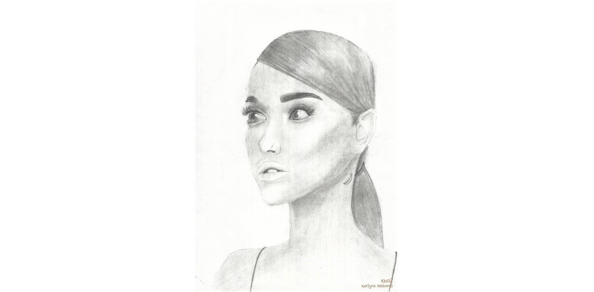
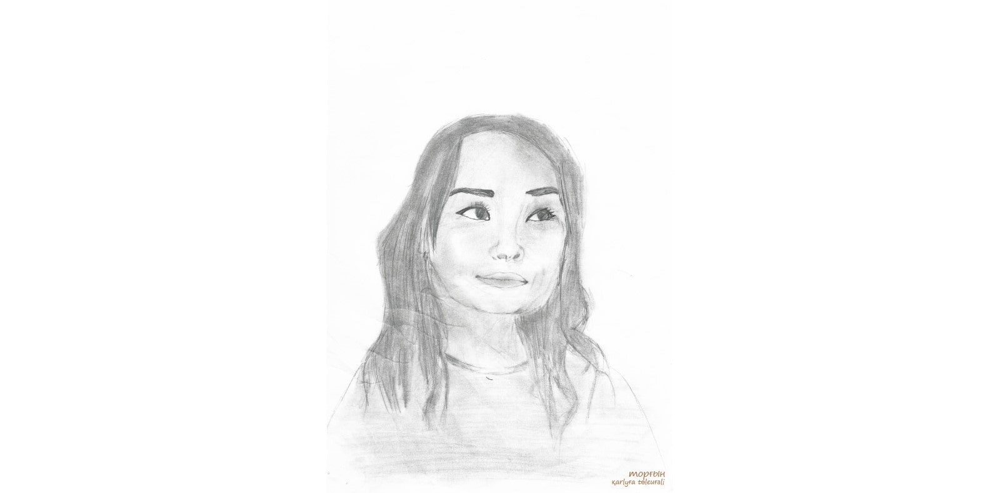
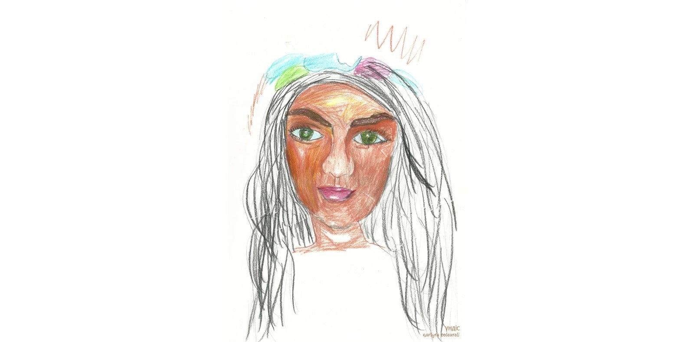
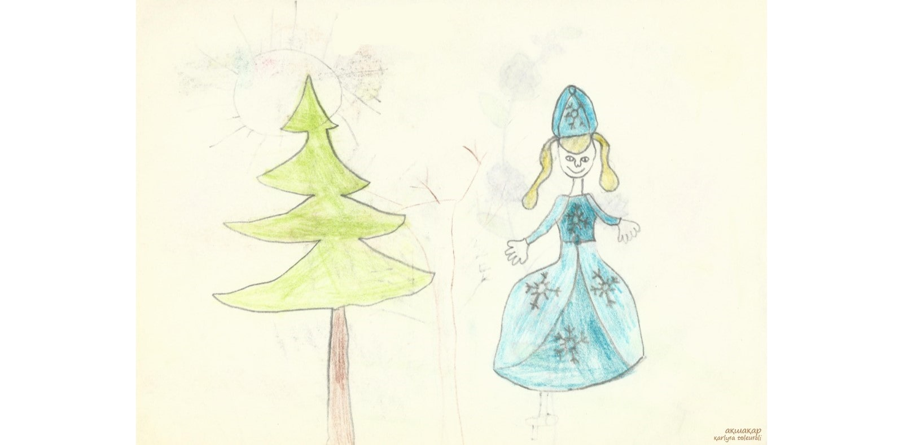

адамдар ....
бөлме ғимарат жобалар
ғарыш тылсым әлем
гүлдер
жеміс өсімдік ағаштар
қалыпталған кескіндер
құрылғы құрал қолданыс заттары
құс жануар жәндік балықтар
өнер білім спорт
сән үлгілері
табиғат